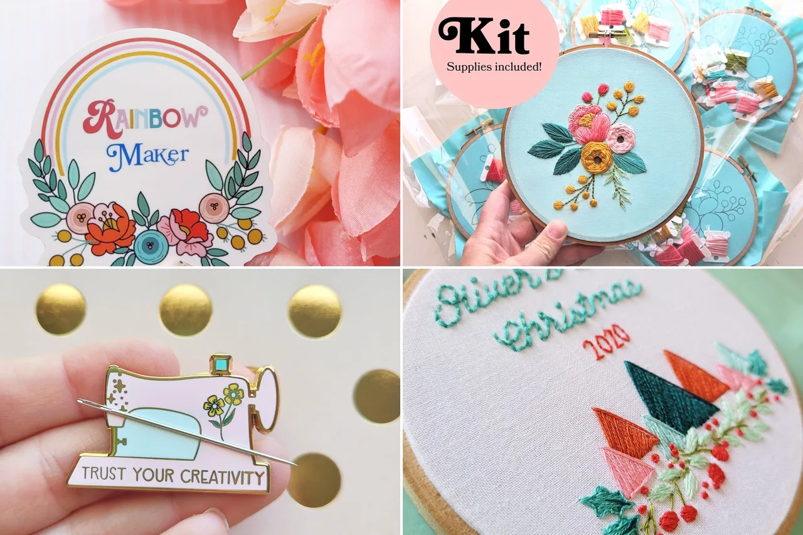
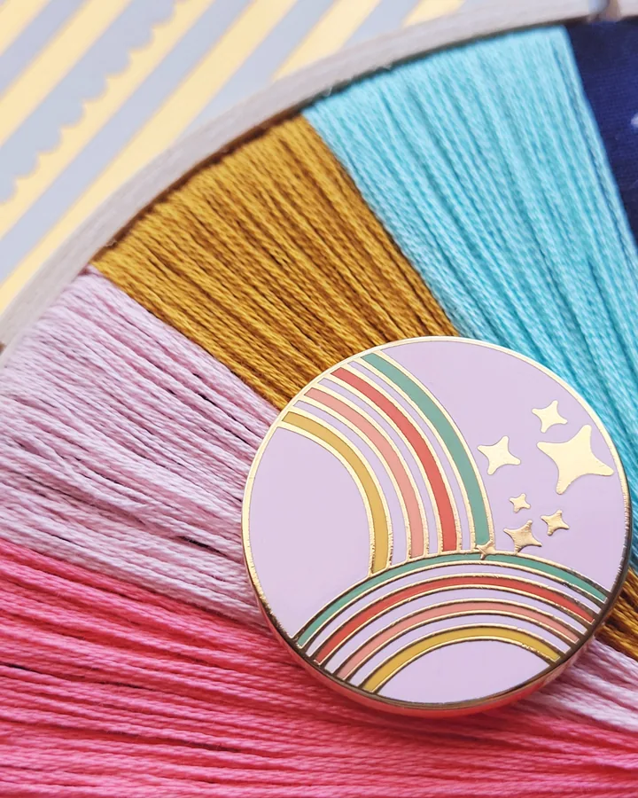
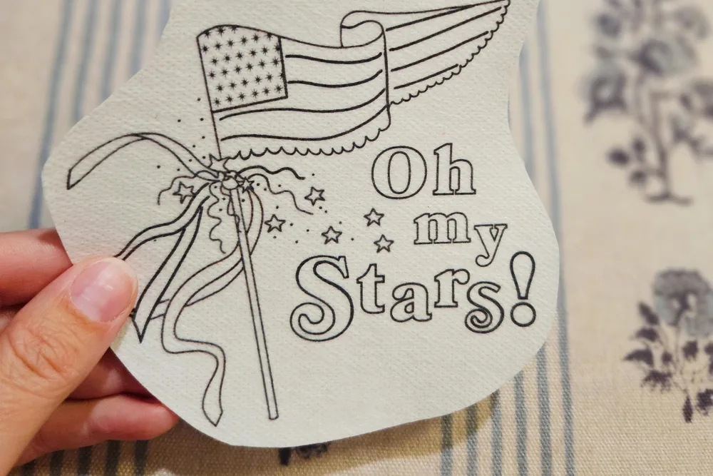
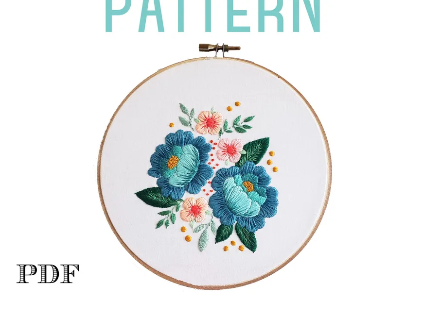
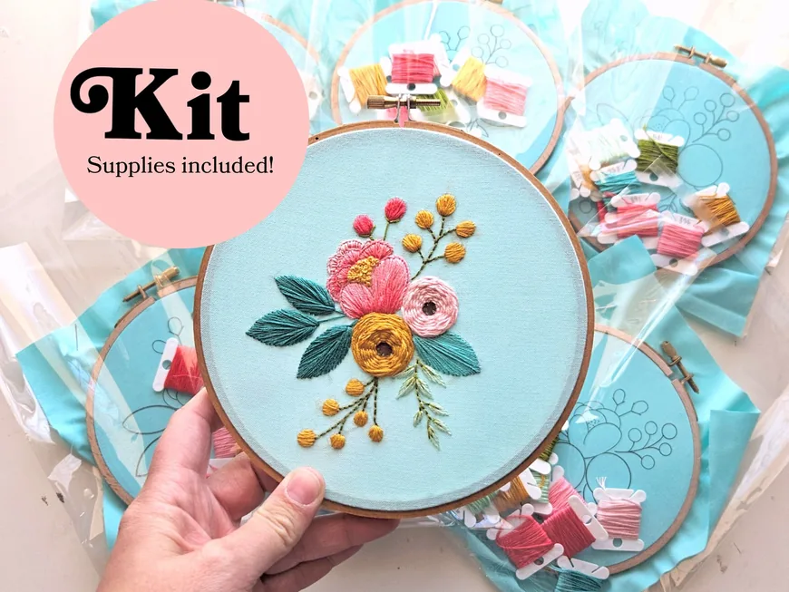
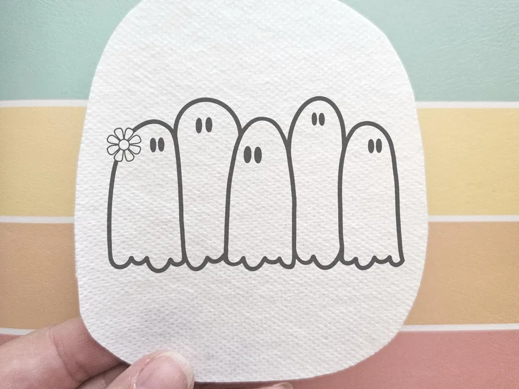
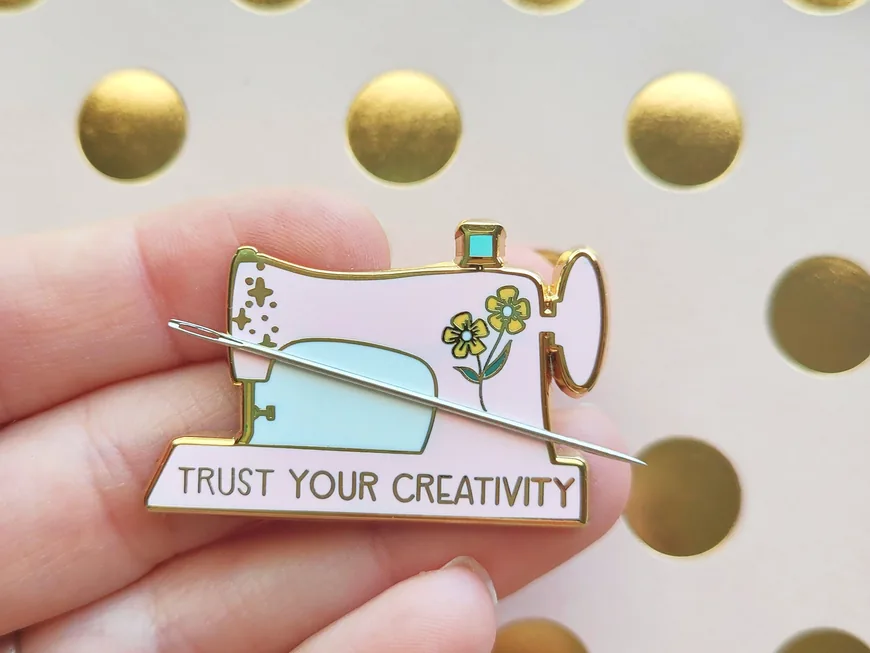

Handmade
Every hoop stitched by Sara.

Embroidery artist · Mesa, Arizona
Retro & vintage-inspired hand embroidery, stitched by hand since 2014.
Meet the Artist
Owner & artist of The Kitschy Stitcher
Hi, I’m Sara Jane! I taught myself embroidery after I quit my office job to be a stay-at-home mom. What started out as an artistic outlet for me has turned into a fun business.
Your embroidery gal pal · Embroidery teacher in sunny Arizona · Over 60 digital sewing patterns in my shop! Ask me about custom orders
Our story

01 How it started
My mother taught me needlework when I was little, and I was so excited when I rediscovered it as an adult. I love how freeing embroidery is: I can go anywhere my needle and thread take me, and the design ideas are endless.
I’ve always loved all things vintage, and that retro flair shows through in my embroidery. As Audrey Hepburn’s #1 fan, I always keep the question “What would Audrey do?” in mind as I create designs.
I dream of traveling to Paris, but until then I create as fast as my fingers will sew, living out my dream with my high-school sweetheart and our little daughter under the Arizona sun.
— Sara
02 Where & how it’s made
So much care and attention to detail goes into each and every piece; no two are alike. Almost everything in the shop can be customized.

03 What makes it special
Every hoop stitched by Sara.
Patterns that are easy to follow.
Your vision, made into a hoop.
Reviews
What we make
Finished hoop art, patterns, kits and little gifts for stitchers. Here is what you will find in the shop.

Over 60 retro and vintage-inspired digital patterns: florals, rainbows, holidays and lettering.

Everything you need to stitch a hoop of your own, from fabric to thread.

Water-soluble patches to stitch straight onto sweaters, totes and pockets.

Magnetic needle minders, scissor stickers and little gifts for stitchers.
Everything is sold through the online shop, with secure checkout and buyer protection.
Stay in the loop
Sign up to be the first to know about sales and new products.
You’re in! 🎉
Continue to the shopRetro embroidery made by hand in Arizona. Follow along on Instagram for new patterns and patches!
Visit the shopFind me elsewhere